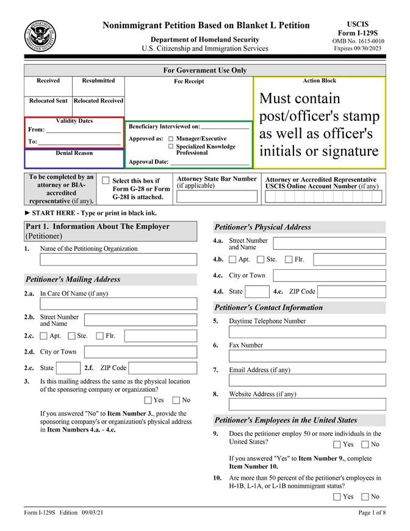

(U) Intracompany Transferees - L Visas
(CT:VISA-1980; 04-29-2024)
(Office of Origin: CA/VO)
9 FAM 402.12-1 (U) Related Statutory and Regulatory Authority
9 FAM 402.12-1(A) (U) Immigration and Nationality Act
(CT:VISA-1084; 06-16-2020)
(U) INA 101(a)(15)(L) (8 U.S.C. 1101(a)(15)(L)); INA 101(a)(32) (8 U.S.C. 1101(a)(32)); INA 101(a)(44) (8 U.S.C. 1101(a)(44)); INA 214(b) (8 U.S.C. 1184(b)); INA 214(c) (8 U.S.C. 1184(c)); INA 214(h) (8 U.S.C. 1184(h)); INA 214(j) (8 U.S.C. 1184(j)).
9 FAM 402.12-1(B) (U) Code of Federal Regulations
(CT:VISA-1084; 06-16-2020)
(U) 22 CFR 41.54.
9 FAM 402.12-1(C) (U) Public Law
(CT:VISA-1475; 02-18-2022)
(U) 1970 amendments to the Immigration and Nationality Act (Public Law 91-225); Sections 123, 205(b) and 206 of The Immigration Act of 1990 (IMMACT) (Public Law 101-649); L Visa Reform Act of 2004 (Public Law 108-447); Consolidated Appropriations Act, 2016 (Public Law 114-113).
9 FAM 402.12-2 (U) Overview of L visas
(CT:VISA-1847; 10-06-2023)
a. (U) “Intracompany transferee” means an applicant who, within three years preceding the time of their application for admission into the United States, has been employed abroad continuously for one year by a firm, corporation, or other legal entity or parent, branch, affiliate, or subsidiary thereof, and who seeks to enter the United States temporarily to render their services to a branch of the same employer or a parent, affiliate, or subsidiary thereof, in a capacity that is managerial, executive, or involves specialized knowledge. An individual or blanket petition, approved by USCIS, is a prerequisite for L visa issuance.
b. (U) Section 1(b) of Public Law 91-225 of April 7, 1970, created an NIV classification at INA 101(a)(15)(L) for intracompany transferees. The L nonimmigrant classification was created to permit international companies to temporarily transfer qualified employees to the United States to improve management effectiveness, expand U.S. exports, and enhance competitiveness in markets abroad.
c. (U) INA 101(a)(15)(L) was amended for the first time by the Immigration Act of 1990 (Public Law 101-649 of November 29, 1990) to provide that the required one year continuous prior employment with the petitioner take place within three years, rather than immediately preceding the time of the individual's application for admission into the United States.
9 FAM 402.12-3 (U) Classification Codes
(CT:VISA-1828; 09-12-2023)
a. (U) 22 CFR 41.12 identifies the following visa classification symbols for intracompany transfers in accordance with INA 101(a)(15)(L):
|
L1 |
Intracompany Transferee (Executive, Managerial, and Specialized Knowledge Personnel Continuing Employment) |
|
L2 |
Spouse or Child of L1 |
b. (U) Within the L-1 classification, there are two sub-classifications:
|
L1A |
Managerial or Executive Transferee |
|
L1B |
Specialized Knowledge Transferee |
9 FAM 402.12-4 (U) Classification Criteria for Intracompany Transferees
9 FAM 402.12-4(A) (U) Individual Petitions
(CT:VISA-1964; 04-04-2024)
(U) The following elements must be considered in evaluating entitlement to L-1 classification in individual petition cases:
(1) (U) The petitioner is the same firm, corporation, or other legal entity, or parent, branch, affiliate, or subsidiary thereof, for whom the beneficiary has been employed abroad;
(2) (U) The beneficiary is a manager, executive, or an employee having specialized knowledge, and is destined to a managerial or executive position or a position requiring specialized knowledge (see 9 FAM 402.12-12 below);
(3) (U) If the L-1B beneficiary will primarily work offsite at an unaffiliated employer location, the petitioner must have control and supervision over the beneficiary, and the beneficiary’s specialized knowledge must be necessary to perform the work being supplied to the end-client (for information on third party worksites, see 9 FAM 402.12-10 below);
(4) (U) The petitioner will continue to do business in the United States and at least one other country (see 9 FAM 402.12-8 below);
(5) (U) The beneficiary meets the requirement of having been employed abroad for one continuous year within the three years preceding the petitioner's filing of the initial L-1 petition or other employment-based NIV petition (such as an H-1B petition) specifically seeking the beneficiary's services to work for a qualifying organization in the United States (see 9 FAM 402.12-11 below);
(6) (U) If the beneficiary is coming to open, or be employed in, a new office, and the requirements described in 9 FAM 402.12-9 below are met;
(7) (U) If the beneficiary is destined to a position requiring specialized knowledge, their period of stay in the United States in L or H nonimmigrant status has not exceeded the five-year maximum allowable period of stay (see 9 FAM 402.12-14(C) below);
(8) (U) If the beneficiary is destined to a position requiring managerial or executive capacity, their period of stay in the United States in L or H nonimmigrant status has not exceeded the seven-year maximum allowable period of stay (see 9 FAM 402.12-14(C) below);
(9) (U) If the beneficiary was previously an exchange visitor and subject to the two-year foreign residence requirement, they have fulfilled the requirement, or such requirement has been waived (see 9 FAM 402.12-18 below and 9 FAM 302.13-2(B)(1));
(10) (U) The beneficiary is not subject to INA 214(b) and is not required to have a residence abroad which they have no intention of abandoning (see 9 FAM 402.12-13 below).
9 FAM 402.12-4(B) (U) Blanket Petitions
(CT:VISA-1976; 04-23-2024)
(U) The following elements must be considered in evaluating eligibility for L-1 classification in blanket petition cases:
(1) (U) The petitioner is the same firm, corporation, or other legal entity, or parent, branch, affiliate, or subsidiary thereof, for whom the beneficiary has been employed abroad and the entities meet the requirements of size, structure, and scope of business activities for approval of L blanket petitions (see 9 FAM 402.12-7(A) below);
(2) (U) The beneficiary is a manager, executive, or specialized knowledge professional and is destined to a position for a manager, executive, or specialized knowledge professional (see 9 FAM 402.12-12 below);
(3) (U) If the L-1B beneficiary will primarily work offsite at an unaffiliated employer location, the petitioner must have control and supervision over the beneficiary, and the beneficiary’s specialized knowledge must be necessary to perform the work being supplied to the end-client (see 9 FAM 402.12-10 below);
(4) (U) The petitioner will continue to do business in the United States and at least one other country (see 9 FAM 402.12-8 below);
(5) (U) The beneficiary meets the requirement of having had one year of continuous employment with a qualifying employer in the three years preceding the application for the L visa (see 9 FAM 402.12-7(B) paragraph c);
(6) (U) The beneficiary is not coming to open or be employed in a new office (see 9 FAM 402.12-7(B) below); and
(7) (U) The petitioner has not filed an individual L petition for the beneficiary (see 9 FAM 402.12-7(G) below).
(8) (U) If the beneficiary is destined to a position for a specialized knowledge professional, their period of stay in the United States in L or H nonimmigrant status has not exceeded the five-year maximum allowable period of stay (see 9 FAM 402.12-14(C) below);
(9) (U) If the beneficiary is destined to a managerial or executive capacity, their period of stay in the United States in L or H nonimmigrant status has not exceeded the seven-year maximum allowable period of stay (see 9 FAM 402.12-14(C) below);
(10) (U) If the beneficiary was previously an exchange visitor and subject to the two-year foreign residence requirement, they have fulfilled the requirement, or such requirement has been waived (see 9 FAM 302.13-2(B)(1));
(11)(U) The beneficiary is not subject to INA 214(b) and is not required to have a residence abroad which they have no intention of abandoning (see 9 FAM 402.12-13 below).
(12)(U) See 9 FAM 402.12-7 below for a full description of the qualifying requirements and processing procedures for blanket petition cases.
9 FAM 402.12-5 (U) DHS Petition Adjudications
9 FAM 402.12-5(A) (U) DHS is Responsible for Adjudicating L Petitions
(CT:VISA-1637; 10-13-2022)
a. (U) By mandating a preliminary petition, Congress placed responsibility and authority with DHS to determine whether the requirements for L status, which are examined in the petition process, have been met.
b. (U) An approved petition is a pre-requisite for visa issuance. You must verify that there is an approved petition for every L visa application. Follow the steps in 9 FAM 402.12-6(B) or 9 FAM 402.12-7(C) to verify the approval of the petition.
9 FAM 402.12-5(B) Individual Petitions
(CT:VISA-1311; 06-30-2021)
a. An employer must file Form I-129, Petition for a Nonimmigrant Worker, with DHS to accord status as an intracompany transferee. Form I-129 is also used to request extensions of petition validity and extensions of stay in L status. The form must be filed with the USCIS Service Center that has jurisdiction over the location where the beneficiary will perform services in accordance with the information found on the USCIS website for I-129 direct filing.
b. USCIS approves individual L petitions, except those involving new offices, initially for the period of established need for the beneficiary’s services, not to exceed three years. If the beneficiary is coming to the United States to open or be employed in a new office, USCIS will approve the petition for a period not to exceed one year. See 9 FAM 402.12-9(D) below.
c. To extend the validity of an individual L petition, the petitioner must file Form I-129, Petition for a Nonimmigrant Worker, with the jurisdictional USCIS Service Center. A petitioner may file for an extension only if the validity of the original petition has not expired.
9 FAM 402.12-5(C) (U) Blanket Petitions
(CT:VISA-1637; 10-13-2022)
a. (U) Certain petitioners seeking the classification of multiple beneficiaries as intracompany transferees may file a single blanket petition with DHS. Qualified petitioners must use Form I-129 to file for approval of a blanket petition with the USCIS Service Center having jurisdiction over the area where the petitioner is located. Form I-129 must also be filed in advance with the appropriate USCIS Service Center for Canadian citizens who wish to enter the United States as L nonimmigrants under the blanket petition provision. The USCIS Service Center is required to notify the petitioner of the approval of a blanket petition within 30 days after a completed petition has been filed.
b. (U) An approved L blanket petition is valid initially for three years and may be extended indefinitely thereafter if the qualifying organizations have complied with the regulations governing the blanket petition provision. To request indefinite petition validity, the petitioner must file a new Form I-129, Petition for a Nonimmigrant Worker, along with a copy of the previous approval notice Form I-797, Notice of Action, and a report of admissions during the preceding three years. This report must include a list of the employees admitted during the preceding three years, the positions held, the employing entity or entities, and the dates of initial admission and final departure of each employee. The petitioner must establish that it still meets the criteria for filing a blanket petition and must document any changes in the business relationships listed on the original petition and any additional qualifying organizations it wishes to add.
c. (U) Once the initial three-year validity of a blanket petition has expired, if the petitioner fails to request an indefinite validity blanket petition, or if the request for indefinite validity is denied, the petitioner and its other qualifying organizations must file individual petitions on behalf of its employees until another three years have elapsed. Thereafter, the petitioner may seek approval of a new blanket petition.
9 FAM 402.12-5(D) (U) Petition Approval
(CT:VISA-1637; 10-13-2022)
(U) DHS uses Form I-797, Notice of Action, to notify the petitioner that the L petition filed by the petitioner has been approved. DHS must notify the petitioner of the approval of an individual or blanket petition within 30 days after a completed petition has been filed. Form I-797 is also used to advise the petitioner that an extension of petition validity and extension of stay in L status for the employee has been granted. The petitioner may furnish Form I-797 to the employee to make a visa appointment, or to facilitate the employee’s entry into the United States, either initially or after a temporary absence abroad during the employee’s stay in L status. For visa applications under a blanket petition, the applicant must submit the I-797 approval notice showing the list of approved entities with Form I-129S (see 9 FAM 402.12-7(C) below for more information).
9 FAM 402.12-5(E) (U) Individual Petitions for Canadian Citizens
(CT:VISA-1976; 04-23-2024)
a. (U) A U.S. or foreign employer seeking to classify a citizen of Canada as an intracompany transferee may file an individual petition in duplicate on Form I-129, Petition for a Nonimmigrant Worker, with CBP in conjunction with the Canadian citizen’s application for admission. A Canadian citizen may present Form I-129, along with supporting documentation, to an immigration officer at a Class A port of entry (POE) located on the United States-Canada border or a U.S. pre-clearance station in Canada when applying for admission. The petitioning employer need not appear, but the Form I-129 must bear the authorized signature of the petitioner.
b. (U) The availability of the above procedure does not preclude the advance filing of an individual petition with DHS, in which case the beneficiary may present a copy of the approved Form I-797, Notice of Action, at a POE.
9 FAM 402.12-6 (U) Adjudicating Individual L Visa Applications
9 FAM 402.12-6(A) (U) Effect of an Approved Individual Petition on Visa Adjudication
(CT:VISA-1976; 04-23-2024)
a. (U) An approved individual petition is prima facie evidence that the requirements for visa classification, which are examined by a USCIS adjudicator during the petition process, have been met. However, the approval of a petition by USCIS does not relieve the visa applicant of the burden of establishing eligibility for the visa. You should attempt to confirm the facts in the petition are true during the visa interview. Remember USCIS interacts solely with the petitioner; the interview is the first point during the petition-based visa process where a United States government representative interacts with the beneficiary of the petition. Additionally, you benefit from cultural and local knowledge adjudicators at USCIS may not possess, making it easier to spot misrepresentation in a visa applicant's qualifications for L status.
b. (U) If you know or have reason to believe an applicant applying for a visa under INA 101(a)(15)(L) is not entitled to the classification as approved in the petition, refuse the case under INA 221(g), and explain to the applicant you intend to return the petition to USCIS for reconsideration, providing an explanation of the relevant facts to the extent possible. See 9 FAM 601.13-3(C). Then, forward Form DS-3099, NIV Petition Revocation Request Cover Sheet, the petition, all pertinent documentation, and a written memorandum of the evidence in Microsoft Word format supporting the request for reconsideration to the Kentucky Consular Center (KCC) at KCCI129Revocations@state.gov. The KCC will then forward the request to the approving USCIS Service Center. For more information on refusing L visas see 9 FAM 601.13.
9 FAM 402.12-6(B) (U) Verifying Petition Approval
(CT:VISA-1976; 04-23-2024)
a. (U) PIMS or PCQS are the resources available to you to confirm that a petition has been approved. You may use an approved Form I-129 or Form I-797 presented by the applicant as sufficient proof to schedule a visa interview or you may schedule an interview based on the applicant’s confirmation that the petition has been approved, but an L visa must not be issued to a potentially eligible applicant unless the petition is approved in PIMS or PCQS.
b. Unavailable.
c. (U) If PIMS does not contain the petition approval, you can check PCQS (found in the CCD under the Other Agencies/Bureaus tab) for confirmation that USCIS has approved the petition before sending an email to KCC to confirm that such petition has been approved and is in PIMS. In PCQS, under Search Criteria, select Receipt Number; then enter the number from the Form I-797; e.g., EAC1234567890. Select Receipt Number in the search type and select CLAIMS 3 as the system. Navigate to the CLAIMS 3 record and confirm USCIS approved the petition along with the validity dates. The presence of a CLAIMS 3 record alone is not indicative of its approval. If you find a petition approval in PCQS that was not in PIMS, you should send an email to PIMS@state.gov as follows: "Petition with Receipt Number EAC1234567890 was found in PCQS but not in PIMS." In the event the case is not available within two days, you should contact the KCCFPM@state.gov mailbox. You may not issue an L visa to an eligible applicant without verification of petition approval either through PIMS or PCQs.
d. (U) If you are unable to locate information on a specific petition either through PIMS or PCQS, you must send an email to PIMS@state.gov. KCC will research approval of the petition and, if able to confirm its approval, will make the details available through the CCD within two working days. If the petition is not available before the visa interview, you may submit requests to KCC no more than five working days before the scheduled interview date. You must check PIMS before submitting a request to PIMS@state.gov. KCC will check the USCIS CLAIMS database and will upload the CLAIMS report into PIMS so that you can proceed with the scheduled interview. Always conduct a PIMS query before sending in these special requests to avoid overburdening KCC.
9 FAM 402.12-6(C) (U) Required Annotations for Individual Petition L Visas
(CT:VISA-1475; 02-18-2022)
(U) L visas issued for beneficiaries of an individual petition must be annotated for the principal applicant and for any derivative spouse or child. The annotation should state the name of the company or qualifying entity the applicant will be working for as it is listed in the PIMS or PCQS record as well as the petition receipt number and expiration date. The second annotation line should be retained for any necessary clearance or waiver information, or duration and purpose information when visa validity is limited, see 9 FAM 403.9-5.
(1) (U) Example Principal Individual L Annotations:
MUST PRESENT I-797 AT POE
“Clearance received on (date)" or "212(D)(3)(A): <waiver information>"
PN-[PETITIONER NAME]
P#-[PETITION RECEIPT NUMBER] PED-[PETITION EXPIRATION DATE]
(2) (U) Individual L Derivatives Annotations:
P.A.: JOHN DOE
“Clearance received on (date)" or "212(D)(3)(A): <waiver information>"
PN-[PETITIONER NAME]
P#-[PETITION RECEIPT NUMBER] PED-[PETITION EXPIRATION DATE]
9 FAM 402.12-6(D) (U) The Procedure for Refusing Individual Petition L Visas
(CT:VISA-1084; 06-16-2020)
(U) For general information on NIV refusals, see 9 FAM 403.10.
9 FAM 402.12-6(E) (U) Referring Approved L Petitions to DHS for Reconsideration
(CT:VISA-1475; 02-18-2022)
(U) If you know or have reason to believe an applicant applying for a visa under INA 101(a)(15)(L) is not entitled to the classification as approved in the individual petition, you must refuse the case under INA 221(g) and explain to the applicant that you intend to return the petition to USCIS for reconsideration, providing an explanation of the relevant facts to the extent possible. Then, submit a Form DS-3099, NIV Petition Revocation Request Cover Sheet along with the petition, all pertinent documentation, and a written memorandum of the evidence in Microsoft Word format to the Kentucky Consular Center (KCC) using the email address KCCI129Revocations@state.gov. The KCC will forward the request to the approving USCIS Service Center. For more information on returning an individual L petition to USCIS for reconsideration and revocation, see 9 FAM 601.13-3(C).
9 FaM 402.12-7 (U) ADjudicating Blanket L Visa applications
9 FAM 402.12-7(A) (U) Requirements for Petitioners to File a Blanket Petition
(CT:VISA-1637; 10-13-2022)
a. (U) A U.S. petitioner that meets the following requirements may file a blanket petition seeking continuing approval of itself and its specified parent, branches, subsidiaries, and affiliates as qualifying organizations which plan to seek to transfer employees to the United States as nonimmigrants under INA 101(a)(15)(L):
(1) (U) The petitioner and each of the specified qualifying organizations are engaged in commercial trade or services;
(2) (U) The petitioner has an office in the United States that has been doing business for one year or more;
(3) (U) The petitioner has three or more domestic and foreign branches, subsidiaries, or affiliates; and
(4) (U) The petitioner and the other qualifying organizations:
(a) (U) Have obtained approval of petitions for at least ten “L” managers, executives, or specialized knowledge professionals during the past 12 months; or
(b) (U) Have U.S. subsidiaries or affiliates with combined annual sales of at least $25 million;
(c) (U) Have a U.S. work force of at least 1,000 employees.
b. (U) The blanket petition provision is meant to serve only relatively large, established companies having multi-layered structures and numerous related business entities. Such companies usually have an established program for rotating personnel. The criteria to qualify for blanket petitions are formulated to exclude small and nonprofit organizations. Such organizations must continue to file an individual petition for each beneficiary.
9 FAM 402.12-7(B) (U) Requirements for Beneficiaries
(CT:VISA-1976; 04-23-2024)
a. (U) The blanket petition provision is available only to managers, executives, and specialized knowledge professionals (see 9 FAM 402.12-12 below) who are destined to work in an established office in the United States (i.e., applicants seeking to open or be employed in a “new” office (see 9 FAM 402.12-9) do not qualify). Applicants who possess specialized knowledge, but who are not specialized knowledge professionals, must obtain L-1 status through an individual petition. For information on specialized knowledge professionals versus individuals having specialized knowledge, see 9 FAM 402.12-12(D) below. An applicant may not apply for a visa under the blanket petition procedure if an individual petition has been filed on their behalf by the same petitioner.
b. (U) Since the individual beneficiaries of blanket petitions are not named in the petition, their eligibility for L classification is not examined by DHS. Consequently, you (or, in the case of Canadians with an approved blanket petition, a CBP officer at the POE) are responsible for verifying the qualifications of applicants for L classification in blanket petition cases. See paragraph c of this section below.
c. (U) You have the authority and responsibility for verifying the qualifications of individual managers, executives, and specialized knowledge professionals who are seeking L classification under the blanket petition provision, and who are outside the United States and require visas. In addition to presenting the required number of copies of Forms I-129S and Form I-797, (see 9 FAM 402.12-7(C) and 9 FAM 402.12-7(D) below), the applicant must establish that they are either a manager, executive, or specialized knowledge professional employed by a qualifying organization. You must determine that the position in the United States is with the organization named on the approved petition, that the job is for a manager, executive, or specialized knowledge professional, and that the applicant has the requisite employment with the organization abroad for one year within three years of the date of application for the visa.
9 FAM 402.12-7(C) (U) Requirements for Verifying Beneficiary Eligibility
(CT:VISA-1637; 10-13-2022)
a. (U) You must review Form I-129S for applicants applying under a blanket petition. An original, photocopied, faxed, or scanned copy of the handwritten signature on the form are all valid.
b. (U) A copy of the Form I-797, Notice of Action, notifying the petitioner of the approval of the blanket petition (which will identify the organizations included in the petition) must be attached to each copy of Form I-129S. You must review the list of organizations on the I-797 to ensure that the employer abroad and the employer in the United States are entities approved by USCIS.
9 FAM 402.12-7(D) (U) Canadian Citizens Seeking L Classification Under Blanket Petitions
(CT:VISA-1847; 10-06-2023)
(U) Citizens of Canada seeking L classification under a blanket petition must present three copies of Form I-129S along with three copies of the Form I-797, to an immigration officer at a Class A POE on the United States-Canada border or a U.S. pre-clearance station in Canada. The availability of this procedure does not preclude the advance filing of Form I-129S with the USCIS Service Center where the blanket petition was approved.
9 FAM 402.12-7(E) (U) Procedure for Issuing Blanket Petition L Visas
(CT:VISA-1976; 04-23-2024)
a. (U) DHS regulations provide that you may grant L classification only in "clearly approvable" applications. You may issue blanket petition-based L visas only when you are satisfied that:
(1) (U) Credible documentation establishes the following:
(a) (U) The applicant has been continuously employed full-time by an entity listed on the blanket petition approval notice for at least one year within the three years immediately preceding the application for the L visa. If, immediately before applying for an L visa, an applicant was present in the United States as a principal beneficiary of an employment-based nonimmigrant petition working for a branch of the same employer or a parent, affiliate, or subsidiary thereof, you should consider the three years immediately preceding the applicant's admission to the United States or change of status under that other status;
(b) (U) The applicant was rendering services in a capacity that is managerial, executive, or involves specialized knowledge throughout that year. An applicant qualifying for rendering services in a capacity involving specialized knowledge must qualify as a specialized knowledge professional; see 9 FAM 402.12-7(B) above and 9 FAM 402.12-12(D) below; and
(c) (U) The applicant is destined to render services in such a capacity (it need not be the same role or job title as the foreign employment), as identified on Form I-129S, and for an organization in the United States listed on the blanket petition approval notice (Form I-797); and
(2) (U) The applicant meets all other requirements; and
(3) (U) There are no indications of fraud or willful misrepresentation affecting the approvability of the underlying petition or the applicant's eligibility for L nonimmigrant status.
b. (U) The applicant bears the burden of proof to show that they are entitled to L-1 classification under a blanket petition. You may only issue a visa if you are satisfied the applicant has presented you with evidence establishing that they fulfill the requirements above in 9 FAM 402.12-7(E) paragraph a. If you have any doubt whether an applicant has fulfilled the burden of proof, you must deny the visa by following the procedures set forth below in 9 FAM 402.12-7(F) below:
(1) (U) You must be careful and thorough in your adjudication to ensure that the applicant meets all requirements for a blanket-petition L visa. Your interview is the only time in the petition and visa process during which a U.S. government representative will interact with the applicant. You benefit from cultural and local knowledge, making it easier to spot misrepresentations in qualifications.
(2) (U) If based on the applicant's documentation, you reasonably believe the applicant has not provided sufficient proof that the application should be approved, you may give the applicant the opportunity to respond to questions or issues that may be quickly or easily resolved during the interview. However, if the questions or issues cannot be resolved during the interview, then you should deny the case per 9 FAM 402.12-7(F) below.
c. (U) Required Annotations: If the visa is issued, it should be annotated “Blanket L-1” for the principal applicant and “Blanket L-2” for any derivative spouse or child. The annotation must also state the name of the petitioning entity on the Form I-129S, Nonimmigrant Petition Based on Blanket L Petition. You must verify the name of the petitioning entity, either on the Blanket I-797 approval notice or in the Petitioner alias field in PIMS. The second annotation line should be retained for any necessary clearance or waiver information, or duration and purpose information when visa validity is limited, see 9 FAM 403.9-5.
(1) (U) Template for Blanket L Annotations:
BLANKET L-1; MUST PRESENT I-129S AT POE
“Clearance received on (date)" or "212(D)(3)(A): <waiver information>"
PN-<PETITIONER NAME>
P#-<PETITION RECEIPT NUMBER> I-129S EXP: <EXP DATE>
(2) (U) Template for Blanket L Derivatives Annotations:
BLANKET L-2; P.A.: JOHN DOE
“Clearance received on (date)" or "212(D)(3)(A): <waiver information>"
PN-<PETITIONER NAME>
P#-<PETITION RECEIPT NUMBER> I-129S EXP: <EXP DATE>
d. (U) You must also endorse two copies of the applicant’s Form I-129S, Nonimmigrant Petition Based on Blanket L Petition. Scan one copy into the case in NIV and return one copy to the applicant for their recordkeeping. Once a copy of the Form I-129S is scanned into the case, there is no requirement to keep a physical copy of the form, which can be destroyed. You must complete the "Validity Dates" box, the "Denial Reason" box, the interview/approval box, and the "Action Block" box to properly endorse the form. Proper endorsement includes noting the approval basis and adjudication date in the interview/approval box; listing the I-129S validity dates (in the Validity Dates box); and a post or officer stamp in addition to the adjudication officer’s initials or signature in the Action Block. At the interview, advise the applicant to hand-carry this form with them to the POE.

e. (U) Determining Validity Dates of I-129S Petition:
(1) (U) You must determine the validity dates for the I-129S petition. For initial Blanket L applicants, the validity end date should either be three years from the date of I-129S adjudication or the end date requested on the "Dates of intended employment" in Part 2, question 2.b. of the Form I-129S by the petitioner, whichever is less.
(2) (U) For renewal Blanket L applicants, you must not only consider what the petitioner is requesting, but also determine the applicant's remaining time under the maximum period of stay as outlined in 9 FAM 402.12-14(C). To assist U.S. Customs and Border Protection (CBP) with ensuring Blanket petition-based L visa applicants are not admitted beyond their maximum period of stay, you must limit the approval dates of the I-129S whenever the maximum period of stay will be reached before the dates requested by the petitioner. For example, if a Blanket L-1A Executive or Manager has already spent six years in L-1 status in the United States, you should limit the approval of the I-129S to one year to ensure they are not admitted in excess of the seven-year maximum period of stay, even if the employer is asking for more time.
9 FAM 402.12-7(F) (U) Procedure for Denying Blanket Petition-Based L Visa
(CT:VISA-1703; 02-23-2023)
a. (U) You must deny under INA 221(g) any blanket petition-based L visa application that does not fulfill the qualifications for L classification under a blanket petition, as explained above in 9 FAM 402.12-7(E) paragraph a above. Before denying an applicant applying under a blanket petition, you must consider the applicant's eligibility under the L-1A Manager/Executive category and the L-1B Specialized Knowledge Professional category. If you determine the applicant is not clearly approvable for L classification under a blanket petition, your decision is final. The applicant may not reapply using the same blanket petition e.g., an L-1B who has been found not clearly approvable cannot reapply as an L-1A under the same petition.
b. (U) You must record the reason for the decision on all copies of Form I-129S by writing "NCA" or "not clearly approvable" in the "Denial Reasons" box (shown in blue in the image above) under INA 221(g). Scan one copy into NIV and shred it; give one copy to the applicant for their records.
c. (U) The petitioner may continue to seek L classification for the applicant by filing a Form I-129, individual petition with the USCIS Service Center having jurisdiction over the area of intended employment. The petition must state the reason why the applicant was denied an L visa under the blanket procedure and must specify which consular office made the determination and the date of the decision.
d. (U) You must not send Blanket L petitions back to USCIS for reconsideration and possible revocation. If you find that the beneficiary does not fulfill the qualifications for L classification under a blanket petition, you must deny the visa. Blanket Petitions are thoroughly vetted by USCIS, but in the rare event you identify fraud trends involving the petitioner that call into question the validity of the Blanket Petition, report this information to CA/VO/F and CA/FPP.
9 FAM 402.12-7(G) (U) Filing Individual L Petition Instead of Using Blanket Petition Procedure
(CT:VISA-1298; 06-04-2021)
(U) Although an applicant might qualify to be a beneficiary of an L blanket petition, the petitioner may file an individual L petition on behalf of that applicant in lieu of using the blanket petition procedure. When exercising this option, the petitioner must certify that the applicant will not apply for a blanket L visa. The petitioner and other qualifying organizations listed on a blanket petition may not seek L classification for the same applicant under both procedures unless a consular officer first denies eligibility under the blanket petition provision.
9 FAM 402.12-7(H) (U) Reassigning L Blanket Petition Beneficiary
(CT:VISA-1475; 02-18-2022)
(U) An applicant admitted under an approved L blanket petition may be reassigned to any organization listed in the approved petition during their authorized stay without referral to DHS, if the applicant will be performing essentially the same job duties. If the applicant will be performing different duties, the petitioner must complete a new Certificate of Eligibility Form I-129S, Nonimmigrant Petition Based on Blanket L Petition, and file it with the USCIS Service Center, which approved the blanket petition.
9 FAM 402.12-7(I) (U) Blanket L-1 Fees
(CT:VISA-1637; 10-13-2022)
a. (U) INA 214(c)(12)(B) requires the collection of a Fraud Prevention and Detection fee (item 25 in the Schedule of Fees) from applicants for L-1 visas who are covered under a blanket petition for L status. All first-time blanket L applications under any Form I-129S, Nonimmigrant Petition Based on Blanket L Petition must pay both the MRV fee and the Fraud Prevention and Detection fee, regardless of whether a visa is issued. If a subsequent L-1 visa application is based on a new Form I-129S, you must collect the Fraud Prevention and Detection fee again. If you have fee questions, contact the Fee Team at CAFee-Team@state.gov.
b. (U) Consular sections must also collect the $4,500 Consolidated Appropriations Act fee from any applicants for blanket L-1 visas whose employers are subject to the fee. To determine if the petitioning employer is subject to the fee, consult the two relevant questions in Part 1 of Form I-129S:
(1) (U) Does the petitioner employ 50 or more individuals in the United States?
(2) (U) If yes, are more than 50 percent of the petitioner's employees in H-1B, L-1A, or L1-B nonimmigrant status?
c. (U) If the petitioner answers “yes” to both questions, the Consolidated Appropriations Act fee for blanket L-1 applications applies (L-2 derivatives are not subject to the fee). If you determine that a first-time applicant must pay the Consolidated Appropriations Act fee, then the applicant must also pay the Fraud Prevention and Detection fee. If the Consolidated Appropriations fee applies, direct the applicant to pay the additional fee on behalf of the petitioner to the consular cashier at the time of application. Use ACRS code 20 for this purpose. This fee for blanket L-1 visa applicants must be charged whether the visa is issued or denied and applies in all first-time blanket L applications under any I-129S petition. If the applicant loses their passport or has a limited validity and applies for a new visa before the expiration of the Form I-129S, do not collect the $4,500 fee for the re-use of the Form I-129S. However, if the petitioner files a new Form I-129S (for example, to extend the applicant's petition after the initial three years) or if the L-1 application presented by the applicant is based on a Form I-129S from another petitioner, then a new fee would be required. The Consolidated Appropriations Act fee is to be paid in addition to the $500 Fraud Prevention and Detection fee and the MRV fee.
9 FAM 402.12-7(J) (U) Effect of Blanket L-1 Fees on Reciprocity Fees
(CT:VISA-1703; 02-23-2023)
a. (U) You must collect from each blanket L-1 applicant the Fraud Prevention and Detection fee and, if applicable under the criteria in 9 FAM 402.12-7(I) above, the Consolidated Appropriations Act fee.
b. (U) To maintain reciprocal treatment regarding visas fees with the applicant’s country of nationality, the Fraud fee and/or Consolidated Appropriations Act fees must be deducted from any applicable reciprocity fees. The reciprocity fee paid should be the remainder of the cost after other applicable fees have been deducted. However, for a new DS-160 application, the applicant would be responsible for paying the reciprocity fee again.
c. (U) For example, if an applicant has an $800 reciprocity fee, but has paid the $500 Fraud Prevention and Detection Fee, they would only be required to pay the remaining $300 of the reciprocity fee if the visa is issued. Conversely, if an applicant’s reciprocity fee was $400 and they paid the $500 fee, they would have no further reciprocity fee obligation if the visa is issued.
9 FAM 402.12-7(K) Unavailable
(CT:VISA-1298; 06-04-2021)
a. Unavailable.
b. Unavailable.
(1) Unavailable.
(2) Unavailable.
(3) Unavailable.
(4) Unavailable.
c. Unavailable.
(1) Unavailable.
(2) Unavailable.
9 FAM 402.12-8 (U) ALL PetitionerS Must be Doing Business in the United States and at Least One Other Country
9 FAM 402.12-8(A) (U) “Doing Business”
(CT:VISA-1298; 06-04-2021)
a. (U) A qualifying organization under INA 101(a)(15)(L) must, for the duration of the intracompany transferee’s stay in the United States, be doing business (engaging in international trade is not required) as an employer in the United States and in at least one other country. (For employees coming to open or be employed in a new office in the United States, see 9 FAM 402.12-9 below). Company representatives and liaison offices which provide services in the United States, even if the services are to a company outside the United States, are included in the “doing business” definition and applicants who perform such services may qualify for L-1 status.
b. (U) “Doing business” means the regular, systematic, and continuous provision of goods and/or services by a qualifying organization and does not include the mere presence of an agent or office of the qualifying organization in the United States and abroad.
9 FAM 402.12-8(B) (U) Transfer to United States of Employees Unattached to Foreign Entity
(CT:VISA-1311; 06-30-2021)
(U) A U.S. company, which is doing business as an employer in the United States and in at least one foreign country, can utilize the L classification to transfer to the United States employees abroad who are unattached to a foreign entity, meaning they were directly employed by the U.S. company during the period of qualifying employment abroad. A foreign company or organization, however, must have, or be in the process of establishing, a legal entity in the United States which is, or will be, doing business as an employer to transfer an employee under INA 101(a)(15)(L).
9 FAM 402.12-8(C) (U) Ongoing International Nature of Organization
(CT:VISA-1311; 06-30-2021)
(U) 8 CFR 214.2(l) requires a qualifying organization to demonstrate its ongoing international nature. The L classification was not created for self-employed persons to enter the United States to continue self-employment (unless they are otherwise qualified for L status), nor was the L classification intended to accommodate the complete relocation of foreign businesses to the United States.
9 FAM 402.12-9 (U) Opening of New Office
9 FAM 402.12-9(A) (U) Qualified Employees of New Offices May Receive L Status
(CT:VISA-1298; 06-04-2021)
a. (U) INA 101(a)(15)(L) does not require the beneficiary of an L petition to be coming for employment at a pre-existing, U.S.-based office of the employer. An individual petition may be approved for a beneficiary who is otherwise classifiable under INA 101(a)(15)(L) and who is coming to establish an office (i.e., commence business) in the United States for the petitioner. An applicant in a managerial, executive, or specialized knowledge capacity may come to open or be employed in a new office on an individual L visa.
b. (U) “New office” means an organization, which has been doing business in the United States through a parent, branch, affiliate, or subsidiary for less than one year.
9 FAM 402.12-9(B) (U) Managers and Executives Establishing or Joining New Office
(CT:VISA-1976; 04-23-2024)
a. (U) A petitioner who seeks L classification for a manager or executive coming to open or to be employed in a new office must submit evidence:
(1) (U) That sufficient physical premises to house the new office have been secured;
(2) (U) That the beneficiary was employed for one continuous year in the three years preceding the filing of the petition in an executive or managerial capacity and that the proposed employment involves executive or managerial authority over the new operation; and
(3) (U) That the intended U.S. operation, within one year of approval of the petition, will support an executive or managerial position.
b. (U) While it is expected that a manager or executive in a new office will be more involved in day-to-day operations during the initial phases of the business, they must also have authority and plans to hire staff and have wide latitude in making decisions about the goals and management of the organization.
9 FAM 402.12-9(C) (U) Applicants with Specialized Knowledge Establishing or Joining New Office
(CT:VISA-1298; 06-04-2021)
(U) A petitioner seeking the entry of an applicant with specialized knowledge to open or be employed in a new office must demonstrate that:
(1) (U) Sufficient physical premises to house the new office have been secured;
(2) (U) The business entity in the United States is or will be a qualifying organization; and
(3) (U) The petitioner has the financial ability to remunerate the beneficiary and to commence doing business in the United States.
9 FAM 402.12-9(D) (U) Petition Validity for Employees of New Offices Limited to One Year
(CT:VISA-1703; 02-23-2023)
(U) USCIS will approve a petition for a qualified employee of a new office for a period not to exceed one year, after which the petitioner must demonstrate to USCIS that it is doing business as defined in 9 FAM 402.12-8(A) above, for USCIS to extend the petition and applicant’s stay beyond one year.
9 FAM 402.12-10 (U) Third Party Worksites
(CT:VISA-1311; 06-30-2021)
a.(U) Under INA 214(c)(2)(F), an applicant who will serve in a capacity involving specialized knowledge and will be stationed primarily at the worksite of an employer other than the petitioning employer or its affiliate, subsidiary, or parent (i.e., the worksite of a third party, such as a client company) is not eligible for an L visa if:
(1) (U) The applicant will be controlled and supervised principally by such unaffiliated employer; or
(2) (U) The placement of the applicant at the worksite of the unaffiliated employer is essentially an arrangement to provide labor for hire for the unaffiliated employer, rather than a placement in connection with the provision of a product or service for which specialized knowledge specific to the petitioning employer is necessary.
b. (U) In cases involving individual petitions, the requirements of INA 214(c)(2)(F) related to third party worksites have been examined by a USCIS adjudicator during the petition process. Therefore, you must not re-adjudicate this issue, but do attempt to confirm that the facts in the petition are true during the visa interview. Remember USCIS interacts solely with the petitioner; the interview is the first point during the petition-based visa process where a USG representative can interact with the beneficiary of the petition. Additionally, you benefit from cultural and local knowledge that adjudicators at USCIS may not possess, making it easier to spot misrepresentation.
9 FAM 402.12-11 (U) Qualifying Experience Requirement
(CT:VISA-1703; 02-23-2023)
a. (U) Continuous for One Year: While INA 101(a)(15)(L) requires the beneficiary of an intracompany transferee petition to have been employed continuously by the petitioner, or by an affiliate or subsidiary thereof, for one year within the three years preceding the beneficiary’s application for admission into the United States, USCIS has provided guidance in Policy Memo 602-0167 clarifying that the proper point for determining the one-year qualifying experience requirement is the date the petitioner files the initial L-1 or other employment-based NIV petition (such as an H-1B petition) specifically seeking the beneficiary's services to work for a qualifying organization in the United States (the starting point in the applicant's application for admission to enable the beneficiary to work in the United States for the L-1 petition or a qualifying organization).
b. (U) Full-Time Employment: While not expressly stated in the INA or regulations, INA 101(a)(15)(L) contemplates that the beneficiary’s qualifying experience with the petitioner must have been continuous full-time employment, and not continuous part-time employment. Several years of part-time employment equaling one year in aggregate cannot be viewed as meeting the requirement.
c. (U) Full-time services divided among affiliated companies, each using the employee on a part-time basis, however, constitute full-time employment if the aggregate time meets or exceeds the hours of a full-time position.
d. (U) Employment Abroad:
(1) (U) The beneficiary’s one year of qualifying experience with the petitioner must be wholly outside the United States. Time spent working for the petitioning firm in the United States does not qualify.
(2) (U) Time spent in the United States working for the foreign employer or a parent, branch, affiliate, or subsidiary thereof, and brief trips to the United States for business or pleasure, do not interrupt the continuity of the one year of continuous employment abroad for L-1 status, but do not count toward fulfillment of that requirement. Such periods spent in the United States may follow the year of employment abroad and immediately precede application for L-1 status, so long as the required one year of qualifying employment during the past three years has been served abroad. Time spent in the United States as a dependent--for example, as an L-2 or E dependent spouse-- does not count as working "for" the qualifying organization.
e. (U) Calculating the One-Year Qualifying Foreign Employment:
(1) (U) When calculating whether the petitioner has established the one-year foreign employment requirement, you should first determine the dates the beneficiary worked abroad for the qualifying foreign entity. Next, determine if there have been any breaks in the beneficiary's employment in the three years preceding the filing of the L-1 petition, or other employment-based NIV petition, such as H-1B, that enabled the beneficiary to work for a qualifying organization. Finally, subtract the breaks from the three-year period. If the result is a continuous one-year period in the three years preceding the filing for the L-1 or such other employment-based NIV petition, the one-year foreign employment requirement has been met.
(2) (U) If the beneficiary spends time working for the qualifying organization in the United States (for example, as an H-1B for the same organization), this will result in an adjustment of the three-year period when determining the one-year foreign employment requirements. A beneficiary has worked for the qualifying organization if they are employed as the principal beneficiary of an employment-based nonimmigrant petition or application (such as H-1B or E-2). For example, if the beneficiary worked for the qualifying organization in the United States from January 2, 2017, to January 2, 2018, as an H-1B nonimmigrant, and the petitioner filed an L-1 petition on the beneficiary's behalf on January 2, 2018, the relevant three-years will be from January 1, 2014, to January 1, 2017. The time a beneficiary spent working while in dependent status or as a student pursuant to Optional Practical Training (OPT) will not result in an adjustment of the three-year period.
9 FAM 402.12-12 (U) beneficiary must seek to work in a managerial or executive capacity or one that requires specialized knowledge
9 FAM 402.12-12(A) (U) Nature of Services Performed and to be Performed
(CT:VISA-1637; 10-13-2022)
a. (U) To be classifiable under INA 101(a)(15)(L), the services performed by the applicant abroad, and those to be performed in the United States, must involve either “managerial capacity”, “executive capacity” or “specialized knowledge.” The beneficiary of a blanket petition must meet the higher standard of being a “specialized knowledge professional”, rather than merely possessing specialized knowledge.
b. (U) Qualifying Positions: The following definitions in this section are used by DHS in evaluating the positions to which L applicants are destined.
9 FAM 402.12-12(B) (U) Managerial or Executive Capacity
(CT:VISA-1637; 10-13-2022)
a. (U) An executive or manager may direct a function within an organization, in accordance with INA 101(a)(44), defining “managerial capacity" and "executive capacity." You may encounter this situation when an applicant does not supervise or control the work of a subordinate staff but instead is primarily responsible for managing an essential function within the organization. If an applicant claims that they will be managing an essential function, they must provide evidence describing in detail the duties to be performed in managing the essential function, i.e., identify the function with specificity and establish the proportion of the beneficiary's daily duties attributed to managing the essential function. In addition, the description of the applicant's daily duties must demonstrate that the beneficiary manages the function rather than performs the duties related to the function. An employee who "primarily" performs the tasks necessary to produce a product or to provide services is not "primarily" employed in a managerial or executive capacity. See INA 101(a)(44)(A) and (B) (requiring that one "primarily" perform the enumerated managerial or executive duties); see also Matter of Church Scientology lnt'l., 19 I&N Dec. 593,604 (Comm. 1988).
b. (U) If a small or medium-sized business supports a position wherein the duties are primarily executive or managerial, it can qualify for an individual petition under the L category. However, neither the title of a position nor ownership of the business is, by itself, an indicator of managerial or executive capacity. The sole employee of a company may qualify as an executive or manager, for L visa purposes, provided their primary function is to plan, organize, direct, and control an organization’s major functions through other people.
c. (U) Factors that will help you assess the applicant's position are the number and job duties of people that will directly or indirectly report to the applicant, whether the applicant's supervisor is someone high within the company structure, whether the applicant's day-to-day duties resemble a manager's or an executive's (e.g., overseeing the work of others, attending high-level or industry meetings on behalf of the entity, etc.), and/or that the applicant will have the authority to make significant decisions for the company.
9 FAM 402.12-12(C) (U) Specialized Knowledge Capacity
(CT:VISA-1637; 10-13-2022)
a. (U) “Specialized knowledge” means special knowledge possessed by an individual of the petitioning organization’s product, service, research, equipment, techniques, management, or other interests and its application in international markets, or an advanced level of knowledge or expertise in the organization’s processes and procedures.
b. (U) To serve in a specialized knowledge capacity, the applicant’s knowledge must be different from or surpass the ordinary or usual knowledge of an employee in the field and must have been gained through significant prior experience with the petitioning organization. A specialized knowledge employee must have an advanced level of expertise in their organization’s processes and procedures or special knowledge of the organization, which is not readily available in the United States labor market.
c. (U) Some characteristics of an employee who has specialized knowledge are that they:
(1) (U) Possess knowledge that is valuable to the employer’s competitiveness in the marketplace;
(2) (U) Are uniquely qualified to contribute to the U.S. employer’s knowledge of foreign operating conditions;
(3) (U) Have been utilized as a key employee abroad and has been given significant assignments which have enhanced the employer’s productivity, competitiveness, image, or financial position; and
(4) (U) Possess knowledge, which can be gained only through extensive prior experience with the employer.
9 FAM 402.12-12(D) (U) Specialized Knowledge Professional Defined
(CT:VISA-1703; 02-23-2023)
a. (U) Specialized Knowledge Professional: To qualify as a “specialized knowledge professional,” an individual must 1) have specialized knowledge as defined above and 2) be a member of a profession consistent with INA 101(a)(32).
b. (U) To qualify under the blanket petition provision (see 9 FAM 402.12-7(B) above), an applicant must be a manager, executive, or specialized knowledge professional. For applicants applying under a blanket petition as specialized knowledge professionals, you must be satisfied they meet both qualifications listed in paragraph (a). If the applicant does not fulfill the qualifications for L classification under a blanket petition, you should deny the visa under INA 221(g) and instruct the applicant the petitioner may continue to seek L classification for the applicant by filing an individual petition on their behalf. See 9 FAM 402.12-7(F) above. If an individual petition is approved by USCIS, the applicant must reapply and submit a new MRV fee for the new L-1 visa application. An applicant applying under a blanket petition who claims specialized knowledge but who fails to present credible evidence to establish they are a member of a profession does not fulfill the qualifications for L classification under a blanket petition. L-1A applicants applying under a blanket petition claiming managerial or executive qualifications do not need to show they are members of a profession consistent with INA 101(a)(32).
c. (U) Evidence that an individual is a member of a profession for blanket L purposes: For an applicant to meet the burden of proof they qualify under a blanket L petition, they must establish through credible evidence that they have specialized knowledge and are a member of a profession. INA 101(a)(32) states, “[t]he term ‘profession’ shall include but not be limited to architects, engineers, lawyers, physicians, surgeons, and teachers in elementary or secondary schools, colleges, academies, or seminaries.” Evidence an applicant is a member of a profession will vary case by case depending on the applicant's unique circumstances. The following examples are meant as guidance and therefore are not the exclusive means by which an applicant may demonstrate that they are a professional for L-1B blanket purposes. Ultimately this determination is the responsibility of the adjudicating officer and qualifying evidence is not limited to these examples:
(1) (U) A bachelor’s degree, or a prolonged course of instruction and study equivalent to the baccalaureate level, that is a realistic prerequisite to practice a profession listed in INA 101(a)(32);
(2) (U) For occupations not listed in INA 101(a)(32), a bachelor’s degree and evidence showing a baccalaureate level degree is required for entry into the occupation. You may consult the Occupational Outlook Handbook, published by the Bureau of Labor Statistics and available online, for assistance in determining if an occupation meets this requirement;
(3) (U) Where applicable, a certification from a profession’s governing body; or
(4) (U) A license to practice a relevant profession, such as that of physician, accountant, attorney, or engineer, where licensure is required in the state or jurisdiction where the applicant intends to work.
d. (U) You may only issue a visa if you are satisfied the applicant has presented you with credible evidence that they are a member of a profession. The applicant bears the burden of proof to show the application fulfills the qualifications for L classification under a blanket petition. An applicant who is unable to provide credible documentary evidence like the types outlined above in paragraph c would be unlikely to establish credibly their membership in the professions. If the applicant failed to meet the burden of proof, you should deny the application. An applicant who fulfills the qualifications for L classification under a blanket petition as a member of a profession must still demonstrate that they have specialized knowledge to be eligible for an L-1B visa under a blanket petition.
e. (U) If you have questions about the interpretation or application of law or regulation, such as what constitutes a member of a profession under INA 101(a)(32), you may consult with your portfolio holder in L/CA.
9 FAM 402.12-12(E) (U) L Status Not Applicable to Skilled Workers
(CT:VISA-1311; 06-30-2021)
(U) Petitions to accord L status may be approved for persons with specialized knowledge, but not for persons who are merely skilled workers. Being a “skilled worker” (i.e., one whose skill and knowledge enable one to produce a product through physical or skilled labor) does not in itself qualify an applicant for the “specialized knowledge” category. Specialized knowledge means special knowledge possessed by an individual of the petitioning organization’s product, service, research, equipment, techniques, management, or other interests and its application in international markets, or an advanced level of knowledge or expertise in the organization’s processes and procedures. INA 101(a)(15)(L) was not intended to alleviate or remedy a shortage of U.S. workers; the temporary worker provisions of INA 101(a)(15)(H) provide the appropriate means for the admission of workers who are in short supply in the United States.
9 FAM 402.12-12(F) (U) Beneficiary Need Not Perform Same Work in the United States as Abroad
(CT:VISA-1976; 04-23-2024)
(U) To qualify for L classification, the beneficiary must be assigned to a position in the United States in a managerial or executive capacity, or in a capacity involving specialized knowledge. The beneficiary need not be coming to perform the same work that was performed abroad. Promotions within the qualifying categories are possible (e.g., from specialized knowledge employee to manager).
9 FAM 402.12-12(G) (U) Full-time Service Required but Not Entirely in the United States
(CT:VISA-1298; 06-04-2021)
(U) In general, the intent of the L-1 classification is the intracompany transfer to the United States of full-time executive, management, or specialized knowledge personnel. However, while full-time employment by the beneficiary is anticipated, INA 101(a)(15)(L) does not require that the beneficiary perform full-time services within the United States. An executive of a company with branch offices in Canada and the United States, for example, could divide normal work hours between those offices and still qualify for an L-1 visa. The applicant's principal purpose while in the United States, however, must be consistent with L status. Therefore, if an applicant lived in the United States and commuted to employment in Canada or Mexico, and only occasionally worked in the United States, the applicant would normally not qualify for L-1 status since the principal purpose for being in the United States would not relate to L employment. An applicant who lived in Canada and came to the United States occasionally to work as an executive for the U.S. branch operation, however, would normally qualify for L-1 status since that applicant's principal purpose for coming to the United States would be consistent with L classification.
9 FAM 402.12-13 (U) Temporariness of Stay
(CT:VISA-1980; 04-29-2024)
a. (U) Applicants for L visas are not subject to INA 214(b). In addition, INA 214(h) states that the fact that an applicant has sought or will seek permanent residence in the United States does not preclude them from obtaining or maintaining L nonimmigrant status. The applicant may legitimately come to the United States as a nonimmigrant under the L classification and depart voluntarily at the end of their authorized stay, and, at the same time, lawfully seek to become a permanent resident of the United States.
b. (U) L-2 spouse and child derivatives of L-1 applicants are subject to INA 214(b) only if they have not been able to establish a bona fide relationship to the principal applicant. L-2 spouses and child derivatives of L-1 are not subject to the foreign residence requirement.
9 FAM 402.12-14 (U) Length of Stay
9 FAM 402.12-14(A) (U) Admission Only During Validity of Petition
(CT:VISA-1637; 10-13-2022)
a. (U) A beneficiary may be admitted to the United States for the validity of the petition, plus up to ten days before the validity of the petition begins and ten days after it ends.
b. (U) The beneficiary of a blanket petition may be admitted for up to three years even though the initial validity of the blanket petition may expire before the end of the three years. If the blanket petition will expire before the end of the three years, the burden is on the petitioner to file to extend the validity of the blanket petition, or to file an individual petition on the applicant’s behalf to authorize an applicant beneficiary's L status in the United States.
c. (U) The admission period for any applicant under INA 101(a)(15)(L) must not exceed three years unless an extension of stay (see 9 FAM 402.12-14(B) below) is granted.
9 FAM 402.12-14(B) (U) Extensions of Stay
(CT:VISA-1311; 06-30-2021)
a. (U) For the beneficiary of an individual L petition, the petitioner must request an extension of the applicant’s stay in the United States on Form I-129. The effective dates of the petition extension and the beneficiary’s extension of stay, if authorized, must be the same.
b. (U) When the applicant is a beneficiary under a blanket petition, the petitioner must file a new Form I-129S, Nonimmigrant Petition Based on Blanket L Petition, accompanied by a copy of the previous Form I-129S, and must concurrently request extension of the blanket petition with indefinite validity if such validity has not already been granted.
c. (U) Extensions of stay may be authorized by DHS in increments of up to two years for beneficiaries of individual and blanket petitions. The beneficiary must be physically present in the United States when the extension of stay petition is filed. If the applicant is required to leave the United States for business or personal reasons while the extension requests are pending, USCIS will update the record in the Claims 3 system, which should populate the record in PIMS. When the maximum allowable period of stay in L classification has been reached (see 9 FAM 402.12-14(C) below), no further extensions may be granted.
9 FAM 402.12-14(C) (U) Limitations on Total Periods of Stay
(CT:VISA-1847; 10-06-2023)
a. (U) The total stay for L applicants employed in a specialized knowledge capacity may not exceed five years, including time in the United States in H status. The maximum allowable stay for an applicant employed in a managerial or executive capacity may not exceed seven years, including time in H status. No further extensions may be granted once these limits have been reached.
b. (U) The total maximum stay will be calculated by determining the actual total number of days the applicant is lawfully admitted and physically present in the United States in L or H status. Time spent in H status in the U.S. also accrues against the maximum authorized stay in L status (and vice versa). See 8 CFR 214.2(l)(12). Time spent as an L-2 dependent does not count against the maximum allowable stay available to a principal L-1 applicant.
c. (U) When an applicant was initially admitted in a specialized knowledge capacity and is later promoted to a managerial or executive position, they must have been employed in the managerial or executive position for at least six months to be eligible for the total length of stay of seven years. The change to managerial or executive capacity must have been approved by DHS in an amended, new, or extended petition when the change occurred or based on a new Blanket L I-129S petition adjudication.
9 FAM 402.12-14(D) (U) Readmission After Maximum Total Period of Stay Reached
(CT:VISA-1637; 10-13-2022)
a. (U) When a nonimmigrant has spent the maximum allowable time in the United States in L and/or H status, they may not be issued a visa or be readmitted to the United States under the L or H visa classification, nor may a new petition, extension, or change of status be approved for that applicant under INA 101(a)(15)(L) or (H), unless the applicant has resided and been physically present outside the United States for the immediate past year.
b. (U) Brief trips to the United States for business or pleasure do not interrupt the one year abroad, but do not count towards fulfillment of that requirement. Periods when the applicant fails to maintain status will be counted towards the applicable limitation; an applicant may not circumvent the limit by violating their status.
9 FAM 402.12-14(E) (U) Exceptions to Limitations on Readmission
(CT:VISA-1637; 10-13-2022)
(U) The limitations on readmission described in 9 FAM 402.12-14(D) above will not apply to applicants who did not reside continually in the United States, and whose employment in the United States was seasonal or intermittent or was for an aggregate of six months or less per year, nor to applicants who resided abroad and regularly commuted to the United States to engage in part-time employment. The applicant must provide clear and convincing proof (e.g., evidence such as arrival and departure records, copies of tax returns, records of employment abroad) that they qualify for these exceptions. The exceptions to limitations on readmission will not apply if the principal applicant’s dependents have been living continuously in the United States in L-2 status.
9 FAM 402.12-15 (U) Validity of L Visas
9 FAM 402.12-15(A) (U) Maximum Validity of L Visa
(CT:VISA-1976; 04-23-2024)
a. (U) The validity of an L visa may not exceed the validity shown in the Reciprocity Schedule. You should issue L visas with the maximum validity permitted based on reciprocity, even though the initial validity of the petition may expire earlier than the visa. See 9 FAM 403.9-4(B) for discussion of the Department's policy regarding issuance of full validity visas.
b. (U) The annotation field of each L visa for individual and blanket petition beneficiaries must include either the petition expiration date as verified in PIMS or PCQS for individual petitions (see 9 FAM 402.12-6(C) above), or the expiration of the approved Form I-129S for blanket petitions (see 9 FAM 402.12-7(E) above).
c. (U) Consular sections are authorized to accept L visa applications and issue visas to qualified applicants up to 90 days in advance of applicants' beginning of employment status as noted on the Form I-797 or I-129S.
d. (U) When there is no gap in authorized status , an applicant may obtain an L-1 visa that is valid for the time remaining on the first petition (and/or any extensions) extending through the validity of the second petition, so long as there is no gap in the period covered by the two petitions.
9 FAM 402.12-15(B) (U) Limiting Validity of L Visas
(CT:VISA-1637; 10-13-2022)
(U) You may restrict visa validity in some cases to less than the validity of the approved petition or authorized period of stay (for example, based on reciprocity or the terms of an order waiving a ground of ineligibility). In any such case, in addition to the other notations required on the L visa (see 9 FAM 402.12-6(C) for individual L visas and 9 FAM 402.12-7(E) above for blanket L visas), see the notations required per 9 FAM 403.9-5.
9 FAM 402.12-15(C) (U) Reissuing Limited L Visas
(CT:VISA-1703; 02-23-2023)
(U) When an L visa has been issued with a validity of less than the validity of the petition or authorized period of stay, you may reissue the visa any number of times within the validity the petition or the authorized period of stay. If a fee is prescribed by the Reciprocity Schedule, you must collect the reciprocity fee for each re-issuance of the L visa.
9 FAM 402.12-15(D) (U) L Visa Renewals
(CT:VISA-1847; 10-06-2023)
a. (U) When an applicant applies for a new L visa before the current L visa expires, you must cancel the current visa and, if otherwise qualified, issue a new L visa for the maximum validity permitted based on reciprocity.
b. (U) When the applicant’s current petition will expire shortly or the applicant has a new petition number with a validity date in the future, you must annotate the new visa with the current valid petition information only. U.S. Customs and Border Protection (CBP) will verify the existence of a valid petition upon entry at a POE regardless of the annotation on the visa.
c. (U) If a blanket L-1 applicant is coming to renew their L-1 visa using a valid endorsed I-129S, such an I-129S is prima facie evidence the requirements for the visa classification have been met. You need not re-adjudicate the applicant's qualifications, but you should confirm in the visa interview the facts in the application are still true and no grounds of ineligibility apply. After cancelling the current visa, you may issue a new visa based on reciprocity. If the applicant is applying with a new employer, has a previously expired I-129S, or for other reasons requires a new I-129S, you must cancel the current visa and re-adjudicate the applicant's qualifications. This may mean denying the visa application if the applicant does not provide credible evidence they currently meet the standard for qualifying for L classification under a blanket petition.
9 FAM 402.12-16 (U) Spouse and Children of L1 Applicants
9 FAM 402.12-16(A) (U) Derivative Classification
(CT:VISA-1637; 10-13-2022)
a. (U) The spouse and children of an L-1 nonimmigrant who are accompanying or following to join the principal applicant in the United States are entitled to L-2 classification and are subject to the same visa validity, period of admission, and limitation of stay as the L-1 applicant. For a general discussion of the classification of the spouse and children of a nonimmigrant, (see 9 FAM 402.1-4 and 9 FAM 402.1-5).
b. (U) A Canadian citizen spouse or child who is accompanying or following to join a Canadian citizen in L-1 status must be admitted as an L-2 nonimmigrant without requiring a visa. A non-Canadian citizen spouse or child of a Canadian citizen in L-1 status must have an L-2 visa when applying for admission.
c. (U) If an L-1 nonimmigrant has maintained their family in the United States in L-2 status, they cannot qualify for exception from the five to seven-year limitation on total stay (see 9 FAM 402.12-14(E) above).
9 FAM 402.12-16(B) (U) Verifying Principal Applicant is Maintaining Status
(CT:VISA-1847; 10-06-2023)
(U) When an applicant applies for an L-2 visa to follow-to-join a principal applicant already in the United States, you must be satisfied that the principal applicant is maintaining L-1 status before issuing the visa. You must also refer to 9 FAM 402.12-6(B) above which discusses checking the status of approved petitions in the CCD.
9 FAM 402.12-16(C) (U) Employment in the United States Authorized for L-2 Dependent Applicants
(CT:VISA-1475; 02-18-2022)
(U) L-2 spouses are authorized employment incident to status. As of January 30, 2022, both USCIS and CBP began issuing Form I-94 notated with L-2S nonimmigrant status to provide acceptable evidence of employment authorization for dependent spouses under List C of Form I-9. Children in L-2 classification receive L-2Y designation and are not employment authorized unless they are eligible through a change of status or other basis.
9 FAM 402.12-17 (U) PERSONAL or domestic EMPLOYEES of L Nonimmigrants
(CT:VISA-1847; 10-06-2023)
Personal or domestic employees seeking to accompany or follow to join L nonimmigrant employers may be issued B-1 visas, if they meet the requirements of 9 FAM 402.2-5(D)(3).
9 FAM 402.12-18 (U) Former Exchange Visitors Subject to Two-Year Foreign Residence Requirement
(CT:VISA-1084; 06-16-2020)
(U) For instructions regarding requests for waivers of the two-year foreign residence requirement by L visa applicants who are former exchange visitors and subject to the two-year residence abroad requirement of INA 212(e), see 22 CFR 40.202, and 9 FAM 302.13-2(B)(1).